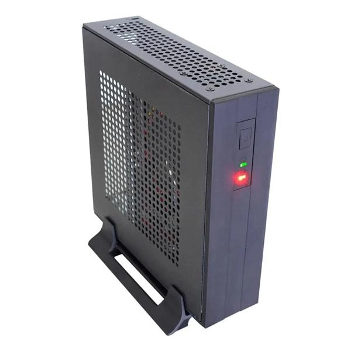

Mini computador da Compusonic (modelo CS05EJAO28AA1S) equipado com processador Intel Celeron N4020, 8GB de memória DDR4 2400MHz e SSD de 256GB M.2 NVMe. Possui gabinete Mini ITX preto, fonte de 60W bivolt automático e acompanha suporte VESA com parafusos, mas não acompanha teclado e mouse.
Você fala direto com nosso time pelo WhatsApp, do começo ao fim — para tirar dúvida, fechar o pedido e acompanhar a entrega. O prazo é de até 7 dias úteis, contado a partir da transportadora.
Todos os produtos são novos, lacrados e originais, vindos de fornecedores autorizados. Você tem 7 dias para troca ou devolução após o recebimento, conforme o Código de Defesa do Consumidor.
Temos técnicos em informática: montagem, configuração, otimização de desempenho, backup de dados e cabeamento estruturado — para computadores de uso pessoal, gamer e de escritório.